Swiss Systems
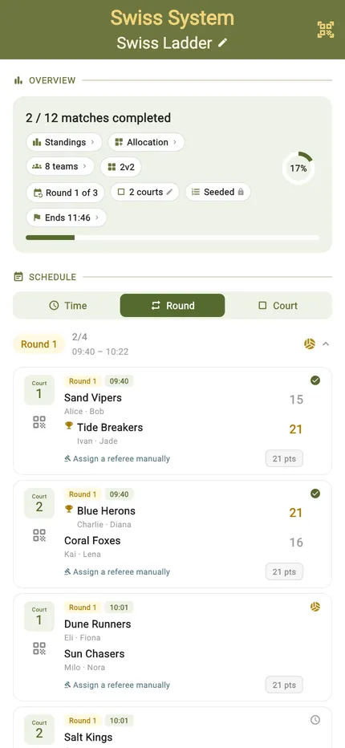
A full ranking from a handful of rounds, without knocking anyone out. After each round teams are re-paired against others with the same record, so the winners meet the winners and the field sorts itself.
It means every game stays close — you are always playing someone who has had the same kind of day as you — and everybody plays the same number of matches, right to the end. TournaQ does the pairing after each round, including the awkward cases where the numbers do not divide.
Best for
- Large fields with limited time — a Swiss ranks everyone in far fewer rounds than a round robin
- Events where knocking half the field out after one loss would empty the venue
- Mixed-ability fields that sort themselves into competitive matches within a round or two
Finding it in the app
Swiss Systems live under Team Competitions in the Arena. The hub keeps every event you have run.

The Arena
Every format the app can run, grouped by the kind of session it suits. The number on a card is how many of those you have run.
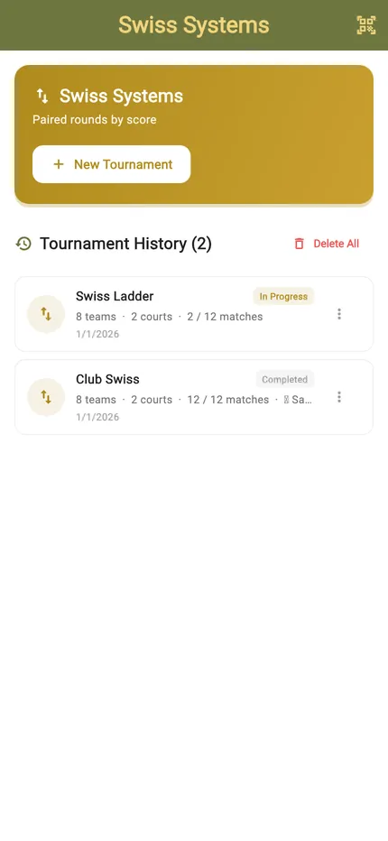
The Swiss hub
New Tournament starts an event. Below it sits your history, each entry showing the date, the team count and how far it got.
Paired by record, round after round
Everyone starts level. After round one the winners are in one bucket and the losers in another, and each round splits the field a little further.
How the field sorts itself
Read it left to right: round one is drawn at random, then every round after pairs teams inside their own score group. A dashed line is a team floated down because its group had an odd number. By the last round the buckets are the ranking, and every match along the way was between teams with the same record.

Setting it up
Add the teams and choose how many rounds. That is the whole decision — the pairings are worked out as you go, not in advance.
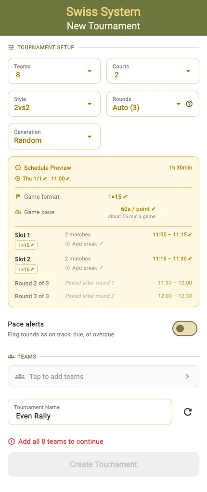
Teams, rounds, courts
Team count, number of rounds, courts and match format. Fewer rounds is a rougher ranking, more rounds is a sharper one; the preview tells you what each costs in time.
There is no draw to seed, because after round one the results do the seeding.
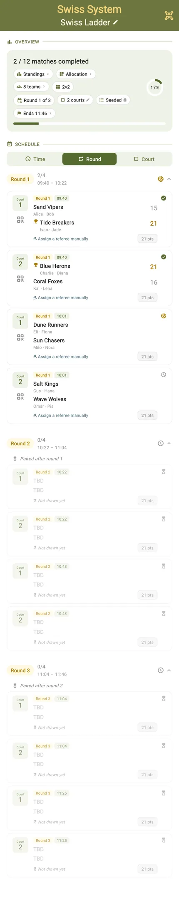
Only round one is drawn
The schedule shows round one in full and later rounds as "paired after round 1" and "paired after round 2". That is the format working as intended — it cannot know who plays whom until it knows who won.
Running the rounds
Score a round, and the next one is paired from the results. The schedule fills in ahead of you rather than existing from the start.
Round by round
The current round with its pairings, courts and scores, and a progress ring showing how far through the event you are.
By court
The same matches regrouped so each court lists its own sequence — the view to hand someone running one court all day.
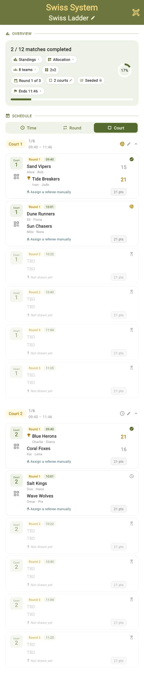
Who is on which court
The allocation grid lays the rounds against the courts, so a big field spread over a few courts stays legible.
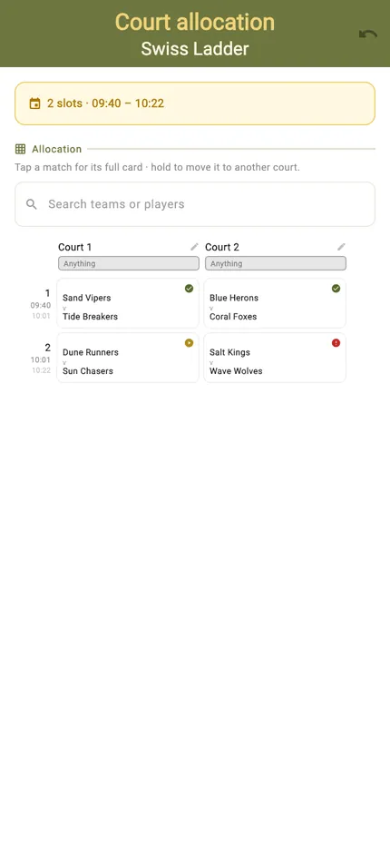
Scoring a match
The same scorecard as everywhere else — and here it matters more, because each result decides who you play next.
Portrait
Tap a side to award the point. The server is highlighted and service passes automatically when the other side scores.
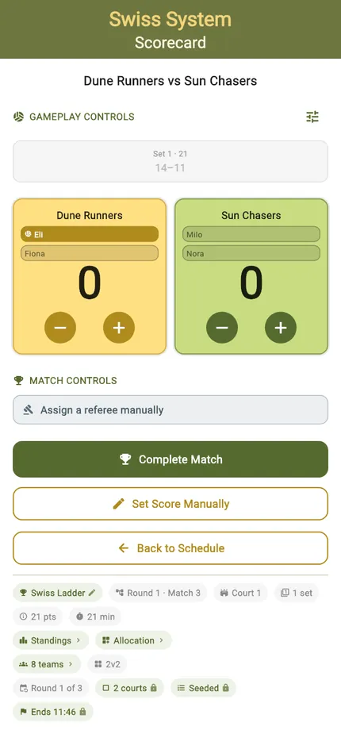
Landscape
Turn the phone and the controls rearrange for a net post or a side table. The layout changes, the functions do not.
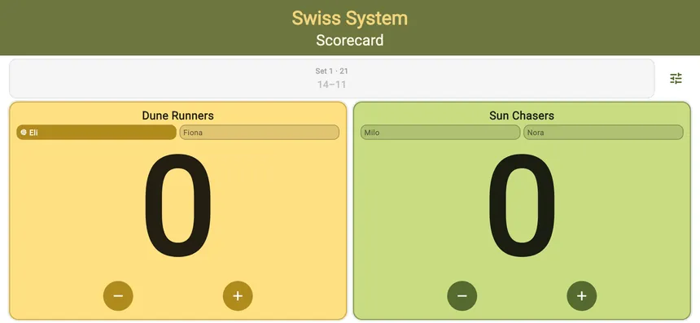
The table as it stands
Standings update after every result, and they are what the next round's pairings will be built from — so the table is a preview of who you are about to play.
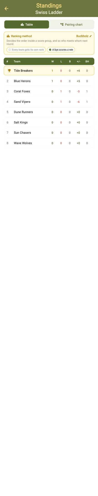
Finishing it
After the last round the buckets are the ranking. Nobody was eliminated, and everyone played the same number of matches.
Every round played
The complete schedule with every pairing the format produced and every result recorded.
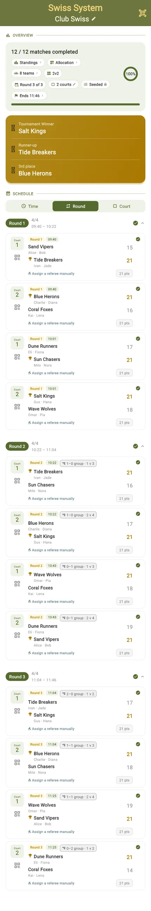
Final standings
The closing order, with the winner at the top and the whole field placed — which is what a Swiss buys you that a knockout does not.
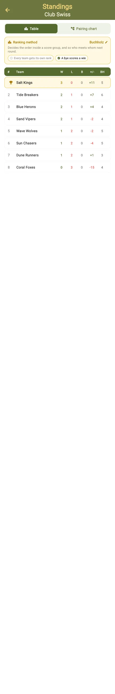
Start to finish
- Open the TournaQ Arena and pick Swiss Systems.
- Tap New Tournament.
- Add the teams and choose how many rounds to play.
- Set the courts and match format, and check the preview.
- Name the event and tap Create Tournament.
- Round one is drawn immediately — score it.
- When the round finishes, TournaQ pairs the next one from the results.
- Repeat until the last round is played.
- Read the final standings — the whole field is ranked, with nobody eliminated.
Have a question about Swiss Systems, spotted something missing, or want to suggest an improvement?